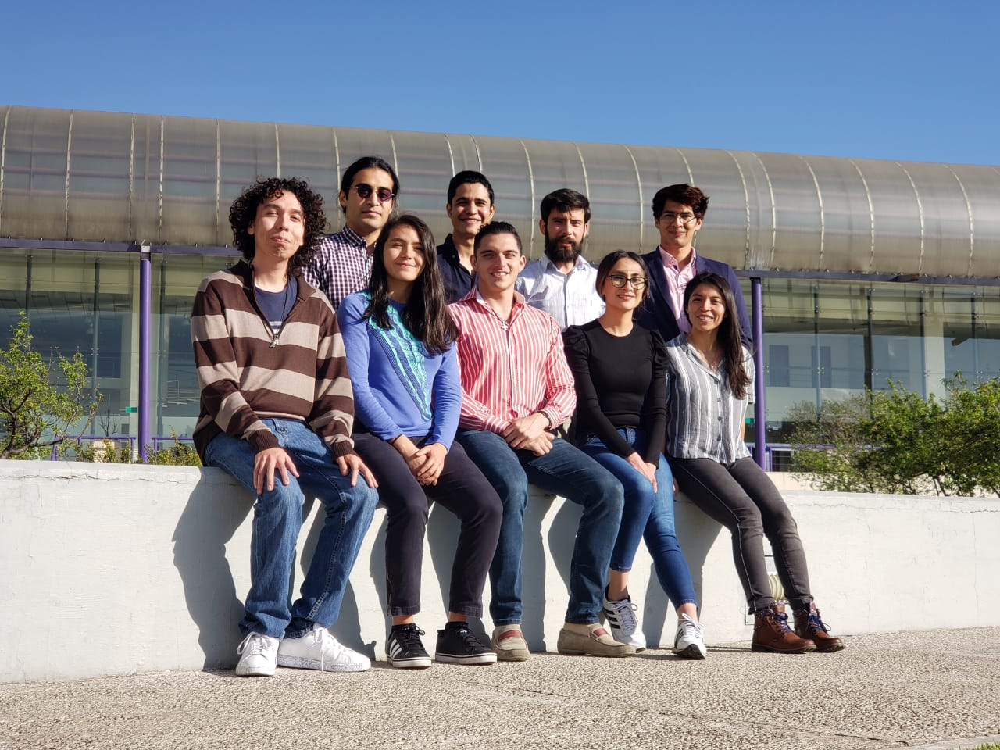

Who we are
Welcome to the webpage of the Human Systems Biology group in the National Institute for Genomic Medicine at Mexico City, INMEGEN. Our group is interdisciplinary and have the objective to develop a systems biology framework to analyze mainly human diseases and metabolic phenotype in microorganisms through the use of computational models and high-throughput technologies.

Currently, our laboratory focuses on the analysis of metabolic alterations in cancer cells by the implementation of genome scale metabolic reconstructions and assess the predictions in terms of experimental data at different scales. We have developed some approaches for modeling cancer metabolism and currently we are developing computational schemes with capacities to integrate metabolome and RNA-seq data for elucidating metabolic mechanism in cancer cell lines and tissues.
Lastly, our laboratory is leading efforts to test the utility of computational schemes to explore themes related with cancer studies, such as the influence of microbiome in cancer, the study of the biological networks regulating the epithelial messenchymal transition and tumor heterogeneity in cancer.
Contact
Directions
Osbaldo Resendis-Antonio, PhD
Laboratory in Systems Biology and Human Diseases
Associated Professor
Instituto Nacional de Medicina Genomica – INMEGEN
Periferico Sur 4809, Arenal Tepepan, Tlalpan, 14610 Mexico City, CDMX
Phone: +52 55 5350 1900 - Ext.1198